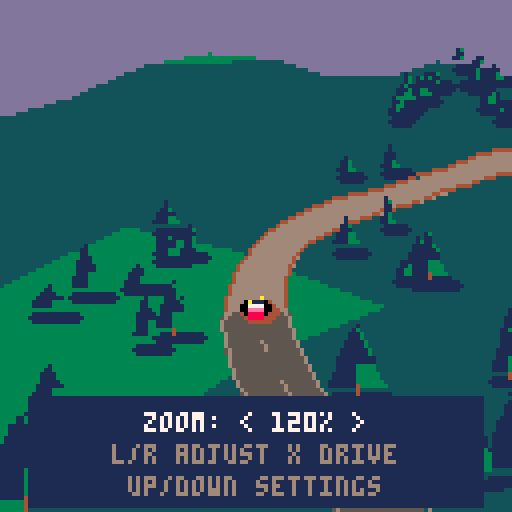
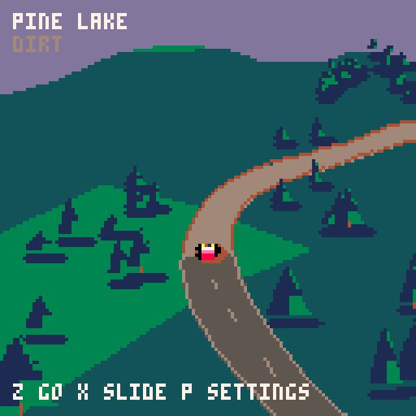
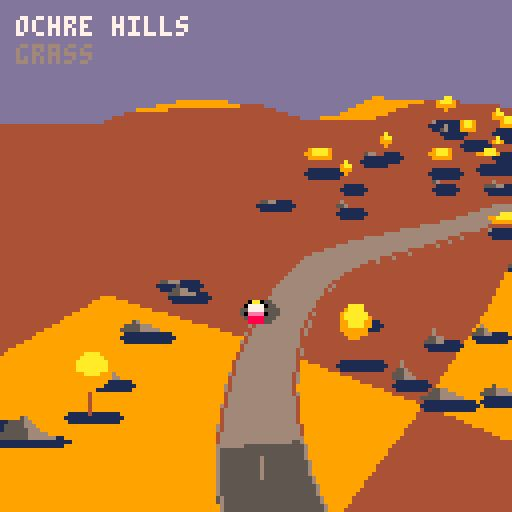
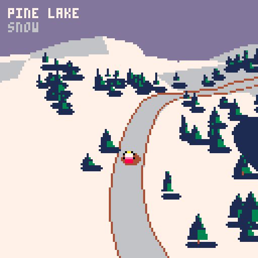

CAMERA AND HANDLING STUDY · NATIVE PICO-8
Quiet Miles
Keep the pleasure of placing a small car through a landscape. Make the clock optional.
This revision focuses on a lower, farther-back camera, rolling hills and surface-dependent sliding. The structure decision is deferred until driving feels right. Free driving is the test environment; the earlier stage experiment is parked. The original options research remains below.
Download the cartridge · Controls and loading instructions · Official free browser runtime
What to preserve from Art of Rally
Funselektor emphasizes expressive handling, including countersteering and handbrake turns. Gameplay developer Jacob Vincent describes the elevated view as a way to see upcoming road features without pace notes. Those are useful priorities for this adaptation: readable bends, visible slip, and enough space to enjoy the scenery. Funselektor · Developer account
For this brief, my design interpretation is to reduce punishment while retaining inertia. A car that instantly follows its nose loses the satisfying sensation of driving; a car that repeatedly spins asks too much attention to remain relaxing. The prototype has smooth digital steering, separate body heading and velocity, front/rear tyre forces with grip limits, angular inertia and progressive grip changes at surface boundaries. Rally and Assisted settings adjust rear grip. It uses original code, scenery and sound.
World structure options
| Option | Why it could work | Main cost |
|---|
| Authored stages | Best control over the sequence of bends, reveals and moments of rest. A clear destination can be satisfying without a timer. | Restarting and route boundaries interrupt wandering. |
| One connected free-roam world | A strong sense of place; memorable junctions, viewpoints and journeys between areas. | More world design, navigation and data management. Empty space is easy to create; worthwhile exploration is harder. |
| Procedural endless road | Continuous driving and a small stored-data footprint. | Needs rules for curvature, sight distance and scenery rhythm. Random bends alone soon become repetitive; region changes need careful transitions. |
| Small regions + optional routes | Free driving is the default. The same roads support a gentle destination or a timed run. Region selection gives variety. | Less seamless than a single global map. Each region must earn its place with distinctive roads and landmarks. |
Provisional direction: small regions plus optional routes still look promising, but this is not a commitment. First judge the camera and handling. Continuous driving does not require infinite terrain: a varied road network can support indefinite laps and detours.
The PICO-8 envelope
The official manual documents a 128×128 display, 16 display colors, six-button input, 8,192 code tokens, 65,535 source characters, and roughly four million VM instructions per second. The default tile map is 128×32, with another 32 rows sharing sprite memory. There are four audio channels, 64 KiB base RAM and a separate 2 MiB Lua heap. PNG cartridges contain 32 KiB of data. Numbers use 16.16 fixed point. PICO-8 manual
60 Hz updates halve the per-frame budget relative to 30 Hz. The manual specifies a compressed-code threshold below 15,360 bytes for PNG/ROM, while this installed Education Edition's INFO display reports a 15,616-byte ceiling; the prototype is comfortably below both. The tile map is a storage format, not a maximum world size. Technical reference
For this game, the practical constraints are road visibility, CPU cost and input feel. Small generated regions avoid a large stored map. Bounded coordinates and scaled distance calculations avoid large squared values. Scenery is culled before rendering, trees are cached sprites, and particle counts are capped. A future endless world would need local coordinates and deterministic chunk generation.
Camera and rendering choices
| Approach | Assessment for this brief |
|---|
| Fixed oblique 2.5D | Stable scenery and predictable orientation. Cheap to render. Steering can be less intuitive when the car is coming toward the viewer. |
| Soft-follow oblique 2.5D | Used in the first prototype. Cheap and readable, but it lacks perspective depth and made the camera feel too high. |
| True perspective low-poly 3D | Now used by the prototype: a perspective height field, road mesh, polygon car and upright scenery sprites. The lower view communicates hills better, with higher CPU cost and simplified depth layering. |
| Road-strip pseudo-3D | A strong choice for a forward-only scenic road. Branches, reversing and free exploration become much harder than with the current world-space model. |
The default Rally Low camera now uses perspective, points downward approximately 27.4°, and sits 90 world units behind and 60 above the smoothed tracked ground height. The comparison High View uses approximately 46°, 65 units back and 85 up. Both are proposed tuning values, not measurements of Art of Rally. The camera follows travel direction with a small contribution from body heading, so countersteering remains visible. Heading is smoothed and capped; terrain height follows slowly. There is no shake or speed zoom.
Elevation changes road geometry and car height. The car pitches and rolls toward local slopes, and gravity changes acceleration uphill and downhill. Terrain remains a coarse mesh, without jumps or a general depth buffer: ground is painted before roads, followed by depth-bucketed scenery and the car. This keeps cost manageable but can show layering inaccuracies at difficult viewpoints. The comparison switches allow hills and camera height to be tested independently.
Driftmania demonstrates how much driving expression and pseudo-3D presentation fit in a small PICO-8 racer. Ghost Rally is another relevant physics reference; its author notes that its handling is demanding and hard to retune. Ramps demonstrates scaled-sprite 3D racing. These are feasibility references; their source and assets were not incorporated.
Adjustable framing
The camera now has six manual zoom steps from 100% to 150%, independent of the low/high viewing angle. The default is 120%, bringing the car 20% larger on screen. 100% is the previous framing. Selecting Zoom in Drive Settings shows a clear preview: Left/Right adjusts, X resumes, and Up/Down returns to the other settings. Framing keeps the car near the same screen height. Zoom persists across region changes and drive restarts for the current session, but is not saved across cartridge resets.

Zoom preview with the driving scene visibleWhat is playable now
Two finite hilly regions, Pine Lake and Ochre Hills, each with a main loop and a dirt lookout spur. The default main road alternates dirt and pavement. Settings can make the whole main loop Dirt or Pavement so the same bend can be compared directly. The car has recovery, gentle collision response, dust, skid marks and a quiet synthesized audio sketch.
| Surface | Intended feel |
|---|
| Pavement | Stronger tyre forces and braking; recovers from lateral movement sooner. Throttle retains more rear grip. |
| Dirt | Lower grip, longer braking, more rear slip under power. Handbrake reduces rear grip further; countersteering can gather the car. |
| Grass | More rolling resistance and lower traction off the main road. |
| Snow test | Very low grip and weaker braking across the entire region, with a temporary snowy palette. This is a handling experiment on existing roads, not an authored winter level. |

Pine Lake · Rally Low · rolling terrain · 120% zoom
Ochre Hills · rolling terrain · previous 100% framing
Snow test · same geometry, much lower grip · 100% framingThis is a camera and handling prototype, with original assets. It does not yet include a connected world, endless generation, jumps, saved progress, a finished soundtrack or extensive authored landmarks. A future snow region can reuse the surface model while adding winter scenery, road design and atmosphere.
Verification and tradeoffs
The actual PICO-8 0.2.7 Education Edition loaded and ran the revised cartridge. INFO reported 5,566 tokens, 18,593 characters and 7,934 compressed bytes, within the cartridge limits. Size evidence
The camera-adjustment revision was also stress-tested at the closest 150% zoom in 1,600 native scenes, with peak CPU 0.8475 and no sampled frame over budget. Manual checks verified the 100% and 150% endpoints, the 120% default, the preview and return to driving. Closest-zoom evidence
The perspective terrain exceeded the 60 fps budget in the first stress run. This revision deliberately presents at 30 fps with two 60 Hz physics steps per frame. Inputs are sampled each rendered frame; physics and camera integration each run twice. A native stress run covered 1,600 camera/terrain combinations across both regions, with both camera settings, full particle buffers and two physics steps. Peak CPU was about 90% of the 30 fps budget (0.9017); no sampled scene exceeded it. Region generation causes a brief setup pause and is excluded from the steady-scene measurement. This sampling does not guarantee every frame or host device. Native sweep evidence
A deterministic Lua harness checked ordered differences in lateral-slide recovery and braking between pavement, dirt and snow; steering direction; powered-turn slip; handbrake slip; reverse; smooth grip transitions; slope gravity; body pitch; road recovery; and both camera heights at eight headings around both regions. It uses ordinary Lua numbers, so native PICO-8 testing remains necessary for fixed-point behavior and performance. Manual checks also covered driving with combined inputs, pause-menu access, surface switching, flat/hilly comparison, the high/low camera, and the snow test.
Start with Rally Low, Rolling hills and Rally feel. Compare Dirt and Pavement on the same bend; then compare the cameras or flat ground while leaving the surface alone. The useful questions now are whether the next bend is visible early enough, whether slides are readable and recoverable, and whether the camera settles naturally after countersteering. Subjective feel still needs your playtest.